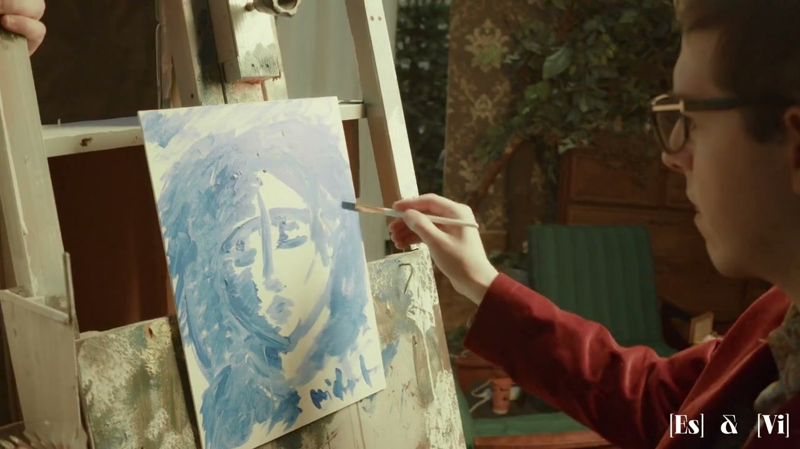
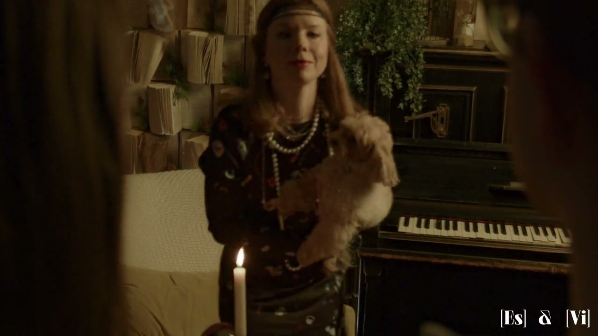
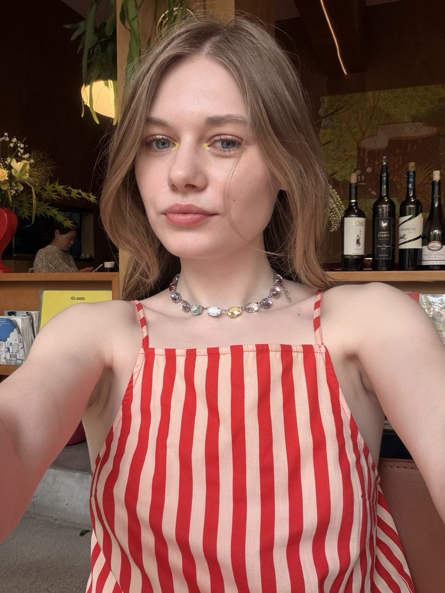
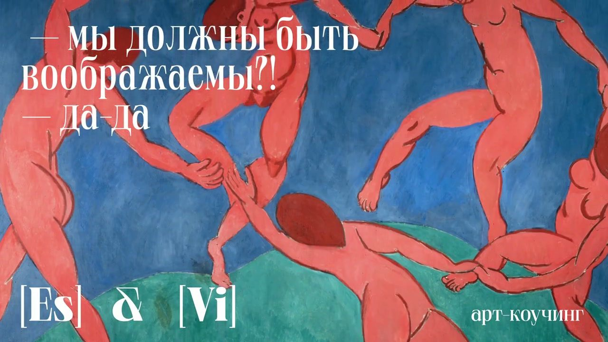

Гайз, у нас есть фильм. И это не запись на телефон для памяти — это настоящее кино: режиссер, кастинг, художник по свету, монтажная группа. Каждый раз, когда я его пересматриваю (а я пересматривала его, кажется, сто миллионов раз), не верю, что это про нас. Это визитная карточка нашей программы — арт-коучинга «Мы должны быть воображаемы».
Сегодня — про человека, без которого этого фильма бы не было. Настя Булаева.
Мы познакомились у Дубосарского
Мы с Настей встретились в мастерских Владимира Дубосарского. Он мой учитель — и ее тоже. Там же и подружились.
Первое образование у Насти — кино и видеоарт. И еще в мастерских я поняла: Настя — очень большой художник. Не «оператор, который снимает красиво», а именно художник, со своим взглядом и своим воздухом. Мне это близко, я на такое реагирую сразу.
Поэтому, когда мы с Леной затеяли проект, я даже не думала, к кому идти с фильмом. Только к Насте.
Карт-бланш и тандем
Я рассказала Насте, о чем проект, — и отдала свободу. Дальше мы работали в тандеме. Настя стала художником-постановщиком и креативным продюсером: стилистика, герои, референсы, реквизит, вся художественная ткань фильма. Она собрала команду — как на настоящем большом проекте, как на Мосфильме: режиссер, видеооператор, художник по свету, монтажная группа, приглашенные актеры, кастинг.
Рядом с ней — ее друг Максим, он же Тео. Мы делали этот фильм в связке: студию нашел Максим, он же взял на себя огромную часть работы — и на площадке, и в монтаже. Максим, тебе отдельное спасибо.

За несколько дней до съемок Настя слегла с ковидом
И тут — поворот, которого мы не заказывали. Прямо перед съемками Настя заболела ковидом. Мы срочно искали, кто подхватит ее работу на площадке. Но Настя рулила процессом удаленно: с температурой, из дома, на связи по каждой мелочи. Мы не перенесли ни одного съемочного дня.
Была и вторая засада. Настю мы планировали снять еще и в роли гадалки — по образу она подходила идеально (референсом была та самая реклама Gucci с гадалкой). Но из-за болезни не сложилось.
Тогда Лена предложила эту роль Саше Жильцовой. И Саша, при всей своей занятости, пришла к совсем незнакомым людям, ничего не зная про проект, — и отнеслась к нам с таким вниманием, заботой и тактом, что стала нашей гадалкой по-настоящему. Но про Сашу — отдельная история, и я расскажу ее совсем скоро.

От Насти — с любовью
Я спросила Настю, что ей запомнилось. Вот ее слова:

«Прошло много времени, детали стираются, но я очень хорошо помню первое ощущение. Меня невероятно тронуло, что ты посмотрела мои работы и увидела во мне именно видеохудожника. Мне тогда самой было интересно соединить современную живопись с видео — попробовать на стыке двух медиумов. Поэтому поработать художником-постановщиком и креативным продюсером здесь было очень ценно.
Когда ты показала презентацию, у меня сразу возник референс — реклама Gucci с гадалкой. Абсолютное попадание по настроению. И появилась мысль: на этой эстетике можно построить не один ролик, а целую историю — серию, где каждый эпизод продолжает предыдущий. Хотелось думать не только о сценарии, но и о художественной ткани — как через детали, символы и переходы выстраивается единый мир. Особенно помню наши созвоны с Максимом (Тео): мы буквально по крупицам собирали эту вселенную.
Перед съемками я заболела ковидом. Было очень обидно не попасть на площадку — казалось, что подвожу всю команду. Но оказалось, что даже на расстоянии можно оставаться частью процесса: мы постоянно были на связи, вы советовались, и я чувствовала, что участвую.
И вот что для меня самое удивительное: проект получился почти таким же, каким я видела его в голове. Без огромного бюджета мы создали настоящую маленькую сказку — цельную, атмосферную и живую. Поэтому я до сих пор вспоминаю его с большой теплотой».
Произведение искусства внутри произведения искусства
Когда фильм смонтировали и отдали нам, я не могла поверить, насколько он стильный. Настолько, что я решила: ему нельзя просто крутиться где-то в канале — он должен стать визитной карточкой сайта. Так и вышло.
Настя называет это маленькой сказкой. Я — произведением искусства внутри произведения искусства. И, кажется, в этом весь наш проект: все начинается с наглой идеи сделать что-то невероятно круто — и довести до конца. Спасибо тебе, Настя. И тебе, Тео.

Фильм — визитная карточка нашего арт-коучинга. А если захочется увидеть, как наше воображаемое рождается вживую, — приходите к нам на бесплатную установочную встречу.
#историяхудожника #измастерской #НастяБулаева #видеоарт #арткоучинг #короткометражка #фильм #МаксимГоглоев #СашаЖильцова #ВладимирДубосарский #современноеискусство #визуальныйнарратив #МыДолжныБытьВоображаемы #мастерскаяДаДа
![[Vi]](../assets/img/journal/emoji/znak_vi.png)